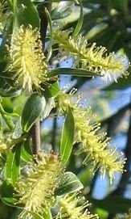
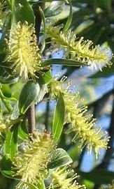

Die Silberweide kann ein großer Baum werden.


Das Blatt ist sehr schmal. Die Unterseite ist hell behaart.
Die Blütenstände sind gelbgrüne Kätzchen.
Die Silberweide kann ein großer Baum werden. | Das Blatt ist sehr schmal. Die Unterseite ist hell behaart. | Die Blütenstände sind gelbgrüne Kätzchen.  |